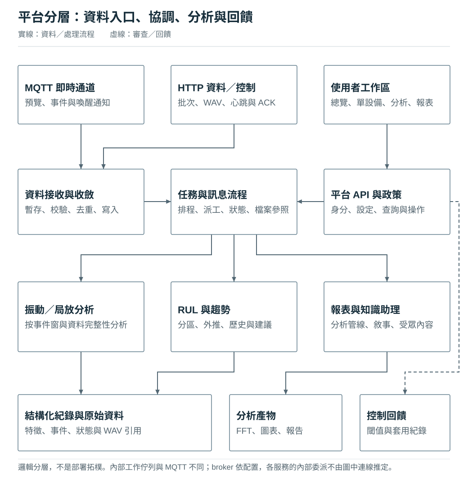
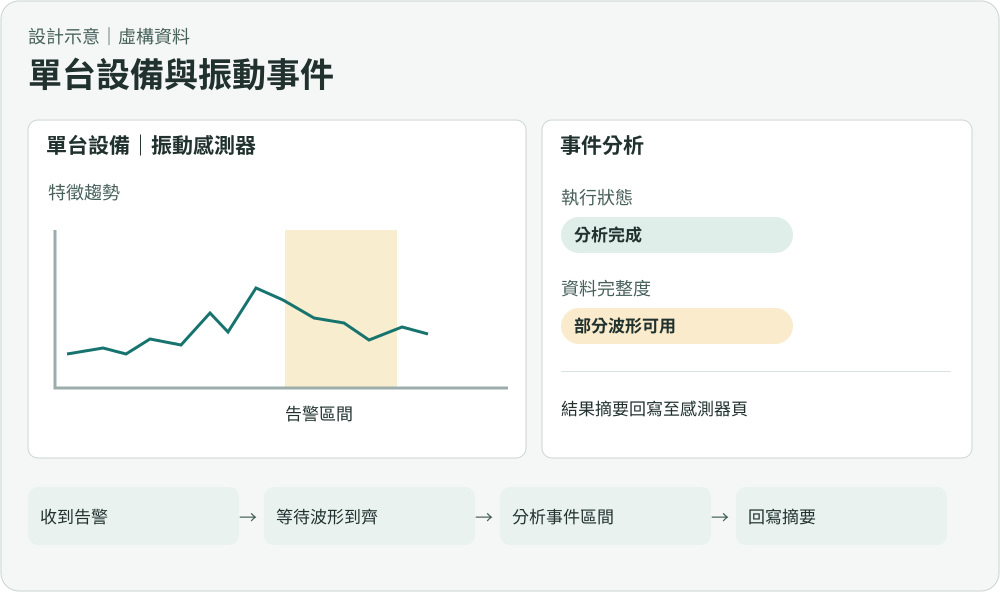
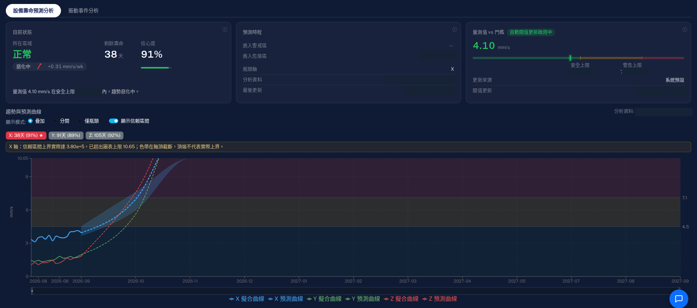
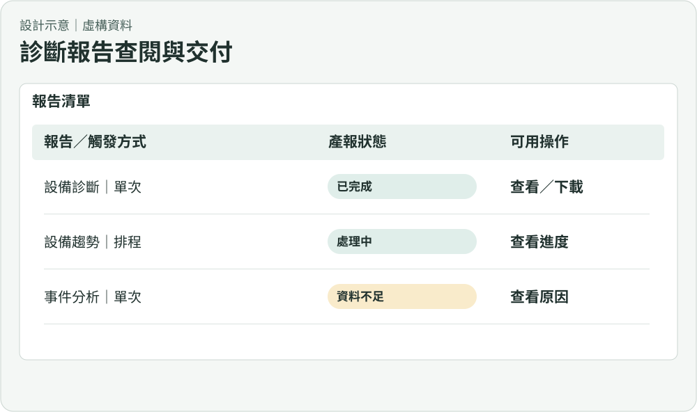

情境與目標
現場需要把持續回報的數值、告警與原始波形串起來：先找出需處理的設備，再追查事件、判讀趨勢、產出報表並留下處理紀錄。
以下依現行系統、操作文件與限定原碼整理功能關係，包含預覽功能；不代表所有版本或現場均已部署。本人責任另依首屏與實際案例說明。
- 從廠區與單設備掌握狀態，再沿事件進入對應感測器的分析面板。
- 即時預覽、可靠補送與背景分析分工；特徵、WAV與FFT產物各有用途。
- RUL、事件分析與報表共用平台狀態與資料，但保留各自的任務、判讀與驗證範圍。

平台模組與功能
| 模組 | 設計與系統機制 |
|---|---|
| 設備與感測器管理 | 知道資料屬於哪台設備、哪個感測器。 廠區、Gateway、感測器身分與配置，連到設備狀態、量測類型及操作入口。 |
| 即時監控與單設備工作區 | 從全廠找出異常，再聚焦一台設備。 健康概況、感測器切換、三軸或頻段數值、特徵趨勢；事件點選後定格到對應時段。 |
| 告警、事件與處理紀錄 | 把發生、分析與人工處理接成可追蹤鏈路。 事件保存與增量追蹤、時間窗歸組、分析入口，以及待處理／已處理等處置狀態。 |
| 振動與局部放電事件分析 | 從告警追查該時段的資料與診斷依據。 等待波形、限制分析範圍、領域服務派工與回寫；執行結果與資料完整性分開呈現。 |
| RUL與閾值回饋 | 讀懂目前狀態、趨勢與可能到達門檻的時間。 分區、瓶頸分量、曲線、擬合品質與歷史；模型建議、平台採用與Gateway套用各自記錄。 |
| 報表、排程與產物管理 | 把分析變成能重跑、查閱與交付的報表。 單次或週期產報、任務生命週期、失敗／資料不足狀態、HTML／PDF與支援型態的DOCX下載。 |
| 助理、通知與系統管理 | 讓分析結果能被理解、通知並持續維護。 依受眾限制知識內容，呈現等待與工具狀態；搭配角色、語言、通知偏好及版本交付。 |
系統架構與流程
架構說明
- 輸入
- 設備／感測器身分、即時特徵與事件、批次資料與原始WAV，以及使用者設定。
- 處理方式
- 資料通道接收與收斂，平台保存狀態並管理背景工作；依事件、排程或手動要求派交振動、局放、RUL與報表流程。
- 產出
- 設備與感測器工作區、事件分析與處理紀錄、RUL與閾值回饋、可查閱下載的報表及可追溯產物。

流程圖
事件鏈路與週期分析分開：下圖聚焦告警如何等待資料、進入分析，再把完整性與處理結果帶回介面；RUL及報表另由各自排程或手動操作啟動。

MQTT與HTTP：兩個層面的分工
現場通道以MQTT提供即時預覽、事件或喚醒通知，HTTP承接批次特徵／WAV、心跳取命令與回覆；預覽值與後續權威資料補送會收斂。平台內部的背景工作佇列是另一層，不等同MQTT broker。
佇列、檔案參照與任務狀態
上傳先接收與暫存，再以檔案參照交給背景工作解析、校驗及落庫，避免把大波形塞進訊息。本人參與RabbitMQ與訊息流程決策；實際broker依版本與配置選擇，不能由文件推定每個現場相同。
特徵、WAV與FFT各自保留什麼
特徵與結構化事件支援日常狀態、趨勢與查詢；原始WAV為需要深入診斷的證據；特徵CSV、FFT快取、圖表與報告作為衍生產物，以引用串回任務。保留範圍及期限依資料用途與版本管理。
分析能力的邏輯邊界與執行方式
新版架構文件將RUL、異常、局放與報表能力整合為平台內部分析模組，以程序內方式呼叫；圖中仍以邏輯能力分層。報表紀錄轉入平台資料庫，初始匯入前與影子工作程序另有保留路徑；各環境實際狀態仍需核對。
操作介面與互動
單設備：數值、趨勢與事件在同一工作區
從單台設備的特徵趨勢定位告警時段。振動事件保存後等待波形到齊，只分析對應的事件區間，再把摘要回寫至感測器頁。即使分析已完成，也要另看資料涵蓋情況。

RUL：目前狀態、時程與不確定性一起讀
感測器面板呈現分區、剩餘時間、瓶頸分量、歷史及預測曲線。信心度是擬合品質；「未達門檻」或空白日期不等於設備安全，需連同目前分區、資料時間與曲線範圍判讀。

報表：把背景任務接到查閱與下載
以感測器分組查閱單次與排程產物，區分完成、處理中、失敗與資料不足。不同報表型態保留自己的內容與格式；報表排程和RUL分析排程各自管理。

事件分析：結果與資料完整性分開
振動分析依事件區間摘要可用資料與特徵；局部放電則並列事件摘要、資料涵蓋與分頻 PRPD，協助使用者判斷圖形可以支持的結論。

- 等待資料：告警已保存，波形仍在到達。
- 分析中：資料範圍已確定，背景服務正在處理。
- 完成／部分完成：可查閱結果，同時揭露實際資料覆蓋。
- 無資料／略過／失敗：保留原因，不能視為沒有異常。
更多技術細節
即時概況與長時間分析分開
概況回答現在需要處理什麼；長時間分析回答狀態如何變化。查詢先呈現摘要，耗時分析另建任務，保存結果、進度與缺資料狀態。
平台狀態是指令依據
指令與確認以平台持久狀態及 HTTP 路徑為準，MQTT 作喚醒通知，定期 heartbeat 補足通知失落。完整狀態更新與獨立波形請求採不同覆蓋規則；完整運行範圍依版本另驗。
產品主責與分析驗證
我負責產品與領域設計、分析方法與實驗、感測器排程、跨服務工作流及整合驗證。振動分析先確認運轉區段與頻譜特徵，局部放電比較事件時間窗的涵蓋，剩餘使用壽命推估另外驗證資料假設與模型行為。
新舊系統如何銜接
2.0 的新功能建構，與舊系統的相容、遷移及替換同時推進。
- 01
新舊共存
同步設備與資料，先保護 2.0 新增的設定及功能。
- 02
逐步替換
轉移設備控制權，建立遷移稽查，將功能改接 2.0 原生流程。
- 03
獨立運作
目前 2.0 已可不依賴 1.0，持續新增功能及版本交付。
先界定資料由誰更新
我建立資料同步與欄位保護，明確區分舊系統可更新的內容與 2.0 自己管理的設定，讓共存期間的新功能與使用者設定能被保留。
把設備控制權移到 2.0
我參與重整設備管理與控制權責，將狀態轉移規則收斂到 2.0，並驗證新舊系統整合。
讓舊資料遷移能被查核
整合遷移清單與檢查工具，要求感測器有明確對應；缺號或對應不明時中止並回報，補正清單後重新驗證，降低設備資料錯置風險。
成果與驗證範圍
實際產出
2.0 已可獨立於 1.0 運作，並整合報告服務、平台派工與下載功能，持續推進產品開發及版本交付。
驗證與限制
依現行文件與限定原碼描述平台功能，包含預覽與後續新增管線；不代表每個現場或版本均完成部署、整合及驗收。